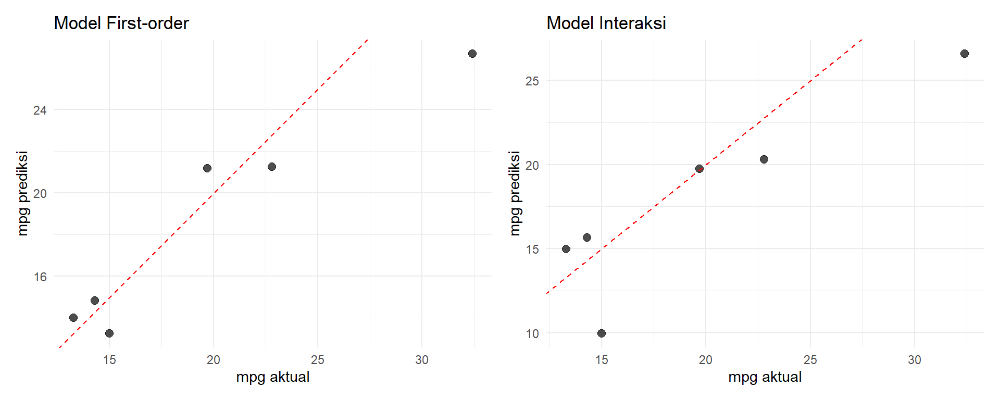

library(tidyverse)
library(patchwork)
library(caret)(Pertemuan 5) Model Validation dalam Regresi Berganda
Evaluasi Performa Model pada Data Baru
Kembali ke Model Linier
Pendahuluan
Di praktikum 4 kita sudah belajar cara membangun beberapa model kandidat (first-order, interaksi, polinomial, log, complete second-order) dan membandingkannya dengan nested F-test. Tapi ada satu pertanyaan yang belum terjawab: apakah model yang cocok dengan data sampel akan tetap akurat saat dipakai di data baru?
Model yang fit dengan baik di data latih belum tentu sukses saat diaplikasikan di lapangan. Misalnya model peramalan jumlah rumah baru bisa saja statistically useful di data sampel tapi gagal memprediksi ketika ada perubahan kebijakan kredit perumahan yang tidak dipertimbangkan saat modeling. Inilah alasan kita butuh model validation, yaitu cara menilai seberapa baik model bekerja di data baru, bukan cuma di data latih (Mendenhall et al., 2011, Sec. 5.11).
Beda dengan model adequacy (yang dibahas via F-test, t-test, \(R^2\)) yang hanya menilai apakah model fit dengan data sampel, model validation menilai kemampuan prediksi model pada data yang belum pernah dilihat.
Package yang Dipakai
tidyverse: untuk data wrangling dan visualisasi (terutamaggplot2).patchwork: untuk menggabungkan beberapa plotggplot2jadi satu tampilan.caret: khusus untuk k-fold cross-validation. Package ini menyediakan fungsitrainControl()dantrain()yang otomatis membagi data, fit model berulang, dan mengumpulkan metrik evaluasi.
Data
Kita lanjut pakai dataset mtcars dan model kandidat yang sudah dibangun di praktikum 4. Responnya mpg, prediktornya wt, hp, dan am.
data(mtcars)
df <- mtcars
df$am <- factor(df$am, levels = c(0, 1), labels = c("Automatic", "Manual"))Pemisahan Data: Data Latih dan Data Uji
Teknik validasi paling umum adalah data-splitting, yaitu membagi data menjadi dua bagian: satu bagian untuk estimasi parameter model (data latih), satu bagian lagi untuk menilai kemampuan prediksi (data uji). Mendenhall et al. (2011, Sec. 5.11) merekomendasikan ukuran total data minimal \(n = 2k + 25\), di mana \(k\) adalah jumlah parameter \(\beta\) dalam model.
set.seed(2026)
n_total <- nrow(df)
n_train <- round(0.80 * n_total)
idx <- sample(1:n_total, n_train)
data_train <- df[idx, ]
data_test <- df[-idx, ]
cat("Data latih:", nrow(data_train), "observasi\n")Data latih: 26 observasicat("Data uji :", nrow(data_test), "observasi\n")Data uji : 6 observasiCatatan: dataset mtcars hanya punya 32 observasi, jadi ukuran data uji sangat terbatas. Dalam praktik nyata, untuk data yang kecil kita lebih baik pakai cross-validation (dibahas di bagian akhir). Untuk tujuan ilustrasi, kita tetap gunakan split ini.
Membangun Model Kandidat
Kita bandingkan dua model dari praktikum 4: first-order dan interaksi.
# Model 1: first-order
model_1 <- lm(mpg ~ wt + hp + am, data = data_train)
# Model 2: interaksi wt dengan am
model_2 <- lm(mpg ~ wt * am + hp, data = data_train)Evaluasi pada Data Uji
Setelah model di-fit pakai data latih, kita hitung prediksi pada data uji dan bandingkan dengan nilai aktual.
Koefisien Determinasi Prediksi (\(R^2_{prediction}\))
Dihitung dengan membandingkan jumlah kuadrat error prediksi dengan variasi total di data uji (Mendenhall et al., 2011, Sec. 5.11):
\[R^2_{prediction} = 1 - \frac{\sum_{i=n+1}^{n+m} (y_i - \hat{y}_i)^2}{\sum_{i=n+1}^{n+m} (y_i - \bar{y})^2}\]
di mana \(\hat{y}_i\) adalah prediksi untuk observasi ke-\(i\) di data uji, dan \(\bar{y}\) adalah rata-rata respon pada data latih.
Mean Squared Prediction Error (MSE_{prediction})
\[MSE_{prediction} = \frac{\sum_{i=n+1}^{n+m} (y_i - \hat{y}_i)^2}{m - (k+1)}\]
di mana \(m\) adalah ukuran data uji dan \(k\) adalah jumlah koefisien \(\beta\) (di luar intercept).
Kita buat fungsi untuk menghitung keduanya sekaligus, plus RMSE untuk kemudahan interpretasi:
evaluasi_model <- function(model, data_train, data_test) {
y_test <- data_test$mpg
y_pred <- predict(model, newdata = data_test)
m <- length(y_test)
k <- length(coef(model)) - 1
sse <- sum((y_test - y_pred)^2)
sst <- sum((y_test - mean(data_train$mpg))^2)
R2_pred <- 1 - sse / sst
MSE_pred <- sse / (m - (k + 1))
RMSE <- sqrt(mean((y_test - y_pred)^2))
list(
R2_train = summary(model)$r.squared,
R2_pred = R2_pred,
MSE_pred = MSE_pred,
RMSE = RMSE
)
}Terapkan ke kedua model:
hasil_1 <- evaluasi_model(model_1, data_train, data_test)
hasil_2 <- evaluasi_model(model_2, data_train, data_test)
tabel_evaluasi <- data.frame(
Model = c("First-order", "Interaksi"),
R2_train = c(hasil_1$R2_train, hasil_2$R2_train),
R2_pred = c(hasil_1$R2_pred, hasil_2$R2_pred),
MSE_pred = c(hasil_1$MSE_pred, hasil_2$MSE_pred),
RMSE = c(hasil_1$RMSE, hasil_2$RMSE)
)
knitr::kable(tabel_evaluasi, digits = 4)| Model | R2_train | R2_pred | MSE_pred | RMSE |
|---|---|---|---|---|
| First-order | 0.8346 | 0.8442 | 20.673 | 2.6251 |
| Interaksi | 0.8942 | 0.7361 | 70.043 | 3.4167 |
Cara Baca
- Kalau \(R^2_{prediction}\) turun drastis dibanding \(R^2\) data latih, modelnya overfit. Artinya model terlalu hafal data latih tapi gagal generalisasi.
- Kalau \(R^2_{prediction}\) mirip dengan \(R^2\) data latih, model punya kemampuan prediksi yang bagus.
- RMSE punya satuan yang sama dengan respon. Misalnya RMSE = 2.5 berarti rata-rata prediksi meleset sekitar 2.5 mpg dari nilai aktual.
Pilih model dengan \(R^2_{prediction}\) lebih tinggi dan RMSE lebih rendah.
Visualisasi Prediksi vs Aktual
Plot ini membantu melihat pola error. Kalau titik-titik rapat di sekitar garis diagonal, prediksi modelnya akurat.
plot_prediksi <- function(model, data_test, judul) {
y_test <- data_test$mpg
y_pred <- predict(model, newdata = data_test)
ggplot(data.frame(aktual = y_test, prediksi = y_pred),
aes(x = aktual, y = prediksi)) +
geom_point(size = 2.5, alpha = 0.7) +
geom_abline(slope = 1, intercept = 0, linetype = "dashed", color = "red") +
labs(title = judul, x = "mpg aktual", y = "mpg prediksi") +
theme_minimal()
}
p1 <- plot_prediksi(model_1, data_test, "Model First-order")
p2 <- plot_prediksi(model_2, data_test, "Model Interaksi")
p1 + p2
Garis merah putus-putus adalah garis \(y = x\) (prediksi sempurna). Semakin dekat titik ke garis, semakin akurat prediksinya.
K-Fold Cross-Validation
Masalah dengan metode split di atas: hasilnya sangat bergantung pada random split. Kalau kebetulan data uji mengandung banyak outlier, evaluasi model jadi tidak adil. Solusinya: k-fold cross-validation.
Ide dasarnya: bagi data jadi \(k\) bagian sama besar (biasanya \(k = 5\) atau \(k = 10\)), lalu lakukan \(k\) iterasi. Di setiap iterasi, satu bagian jadi data uji dan sisanya jadi data latih. Semua error dari \(k\) iterasi digabung jadi satu metrik evaluasi (Mendenhall et al., 2011, Sec. 5.11).
Keuntungannya: semua observasi dipakai sebagai data uji sekali, dan sebagai data latih \(k-1\) kali. Hasilnya lebih stabil dan tidak bergantung pada split tunggal.
Kasus Khusus: Leave-One-Out (Jackknife)
Kalau \(k = n\) (jumlah observasi), setiap iterasi cuma ada satu observasi di data uji. Metode ini disebut leave-one-out cross-validation atau jackknife, cocok untuk data yang sangat kecil (Mendenhall et al., 2011, Sec. 5.11).
Jumlah kuadrat error prediksi dari jackknife dinamakan PRESS (prediction sum of squares):
\[PRESS = \sum_{i=1}^{n} (y_i - \hat{y}_{(i)})^2\]
di mana \(\hat{y}_{(i)}\) adalah prediksi untuk observasi ke-\(i\) saat model di-fit tanpa menyertakan observasi tersebut. Dari sini bisa dihitung \(R^2_{jackknife}\):
\[R^2_{jackknife} = 1 - \frac{PRESS}{SSTotal}\]
Implementasi dengan caret
Kita jalankan 5-fold cross-validation untuk kedua model, pakai seluruh data df:
set.seed(2026)
kontrol_cv <- trainControl(method = "cv", number = 5)
cv_model_1 <- train(
mpg ~ wt + hp + am,
data = df,
method = "lm",
trControl = kontrol_cv
)
cv_model_2 <- train(
mpg ~ wt * am + hp,
data = df,
method = "lm",
trControl = kontrol_cv
)
tabel_cv <- data.frame(
Model = c("First-order", "Interaksi"),
RMSE_cv = c(cv_model_1$results$RMSE, cv_model_2$results$RMSE),
R2_cv = c(cv_model_1$results$Rsquared, cv_model_2$results$Rsquared),
MAE_cv = c(cv_model_1$results$MAE, cv_model_2$results$MAE)
)
knitr::kable(tabel_cv, digits = 4)| Model | RMSE_cv | R2_cv | MAE_cv |
|---|---|---|---|
| First-order | 2.6982 | 0.8408 | 2.2229 |
| Interaksi | 2.6200 | 0.8803 | 2.2123 |
Cara Baca Hasil CV
RMSE_cv: rata-rata RMSE dari 5 fold. Semakin kecil, semakin bagus.R2_cv: rata-rata \(R^2\) dari 5 fold, menunjukkan seberapa baik model generalisasi ke fold yang tidak dilatihi.MAE_cv(Mean Absolute Error): rata-rata selisih absolut prediksi dan aktual, pakai ini kalau mau metrik yang tidak sensitif terhadap outlier.
Model yang punya RMSE_cv lebih kecil dan R2_cv lebih besar adalah model dengan kemampuan prediksi lebih baik.
Kesimpulan: Pilih Model Mana?
Setelah melihat hasil di data uji dan cross-validation, kita bisa menyimpulkan:
- Jika dua model punya \(R^2\) data latih mirip, tapi satu punya \(R^2_{prediction}\) atau \(R^2_{cv}\) yang jauh lebih tinggi, pilih yang itu.
- Kalau perbedaannya tipis, ikuti prinsip parsimony: pilih model yang lebih sederhana.
- Kalau model kompleks (misalnya complete second-order) punya \(R^2\) data latih tinggi tapi \(R^2_{prediction}\) rendah, itu tanda overfitting.
Validasi model tidak menjamin model akan selalu bekerja baik di masa depan, tapi paling tidak kita punya lebih banyak bukti untuk percaya pada modelnya.
Referensi Sintaks
# Data-splitting
set.seed(seed_number)
idx <- sample(1:nrow(df), size = round(0.8 * nrow(df)))
data_train <- df[idx, ]
data_test <- df[-idx, ]
# Prediksi di data uji
predict(model, newdata = data_test)
# K-fold cross-validation dengan caret
library(caret)
kontrol <- trainControl(method = "cv", number = 5)
cv_hasil <- train(
y ~ x1 + x2,
data = df,
method = "lm",
trControl = kontrol
)
cv_hasil$results # RMSE, R2, MAE
# Leave-one-out cross-validation
kontrol_loo <- trainControl(method = "LOOCV")
# Hitung PRESS statistic manual
PRESS <- sum((residuals(model) / (1 - hatvalues(model)))^2)Referensi
Mendenhall, W., Sincich, T. (2011). A Second Course in Statistics: Regression Analysis (7th ed.). Prentice Hall.
Materi modul ini mengacu pada bagian external model validation (Sec. 5.11), yang mencakup pemeriksaan prediksi dan parameter, pengumpulan data baru, data-splitting atau cross-validation, serta jackknifing dengan statistik PRESS.